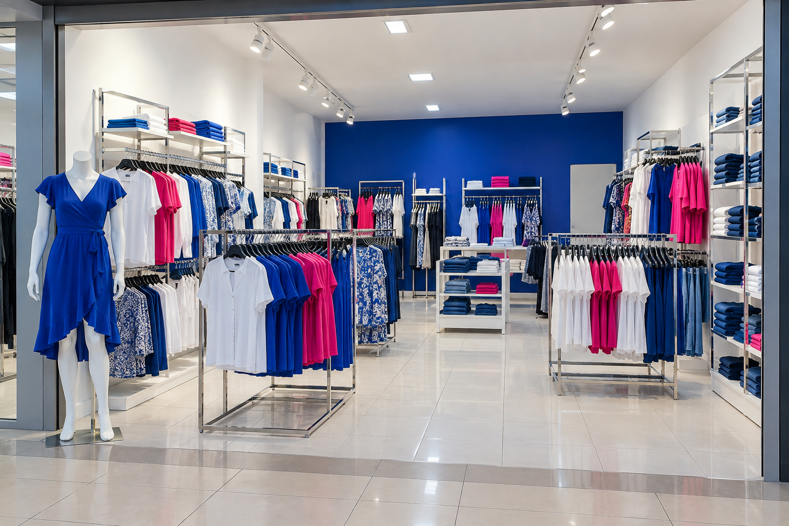
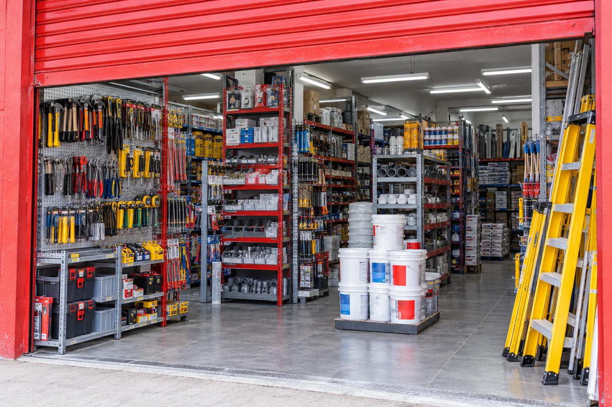

Café de la Esquina
Cafetería · Comercio de ejemplo
Un cafecito. Una buena pausa.
UN CATÁLOGO DIGITAL. NEGOCIOS DE COSTA RICA.
Estamos creando un catálogo digital de comercios físicos de Costa Rica. Un espacio para mostrar tu local y conectar con quienes buscan lo que ofrecés.
Fecha de lanzamiento: 2027
Cafetería · Comercio de ejemplo
Un cafecito. Una buena pausa.
Ropa y accesorios

Hogar y ferretería

Muestra conceptual · Comercios ficticios e imágenes ilustrativas generadas.
TENÉS UN LOCAL. TENÉS UNA HISTORIA.
Una dirección que cambió. Un teléfono viejo. Fotos que ya no muestran lo que sos. Tu presencia digital debería estar a la altura de tu negocio.
Una página para presentar tu comercio, mostrar lo que ofrecés y reunir tu información en un solo lugar.
Fotos recientes, horarios claros y tus medios de contacto al día. Que te conozcan antes de visitarte.
Queremos conectar tu local con personas que buscan comercios como el tuyo en Costa Rica.
En el barrio, en el centro o dentro de un centro comercial.
Si tenés un local físico en Costa Rica, esto también es para vos.
UN POQUITO DE LO QUE VIENE
Que alguien pueda asomarse a tu local, reconocer lo que ofrecés y decidir visitarte. Estamos preparando tu espacio digital para hacer ese primer encuentro más sencillo.
Un primer vistazo. Compartiremos más novedades conforme nos acerquemos al lanzamiento.
Quiero seguir las novedadesTu espacio en CRvende
Café, historias y algo recién horneado.
Un lugar para hacer una pausa.
Buen café, algo recién horneado y un espacio para quedarse un ratito.
Un vistazo a lo que hoy te espera en nuestro local.
Un vistazo al espacio, sus estantes y lo que te espera al entrar.
Vista conceptual. Comercio ficticio e imagen generada como ilustración. El diseño final puede cambiar.
DE LA PANTALLA A TU BARRIO
Una forma sencilla de encontrar la tienda que andabas buscando, conocerla un poquito y saber cómo llegar.
Queremos que descubrir comercios físicos de Costa Rica sea sencillo, desde un mismo espacio.
Conocé el espacio y sus estantes a través de fotos actuales. Revisá horarios, contacto y menú cuando corresponda.
Desde el local de tu barrio hasta esa tienda dentro de un centro comercial. La experiencia continúa al cruzar su puerta.
ESTO APENAS ESTÁ EMPEZANDO
Estamos construyendo CRvende para todo el país. En el camino iremos compartiendo pequeños adelantos de lo que viene.
ANTES DE EMPEZAR
Para comercios físicos de Costa Rica que quieren que su presencia en internet esté a la altura de lo que ofrecen. CRvende le dará a cada negocio un espacio web con identidad propia, donde sus clientes podrán conocer el local, descubrir su oferta y encontrar la información que necesitan para visitarlo.
La propuesta es nacional: San José, Alajuela, Cartago, Heredia, Guanacaste, Puntarenas y Limón.
Podrás encontrar sus medios de contacto y redes en su espacio de CRvende, para conversar directamente con el negocio.
No. El registro de interés es un paso previo, sin pago ni compromiso de contratar. Los planes de suscripción, precios y condiciones se comunicarán antes de abrir las inscripciones.
TU NEGOCIO PUEDE SER PARTE
Dejá tu interés en ser parte de CRvende. Cuando abramos el registro, queremos que los comercios de aquí sean los primeros en enterarse.